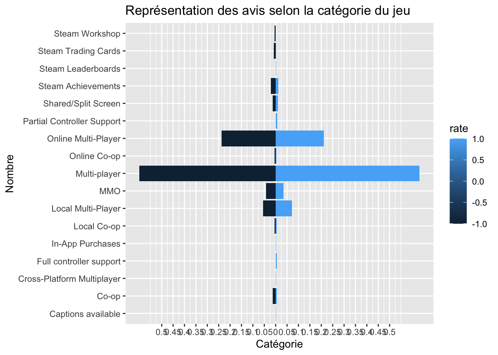

Loading required package: NLP
Attaching package: 'NLP'
The following object is masked from 'package:ggplot2':
annotate
library(SnowballC)
1. Chargement des données
steam <-read_csv("steam.csv")
Rows: 27075 Columns: 18
── Column specification ────────────────────────────────────────────────────────
Delimiter: ","
chr (8): name, developer, publisher, platforms, categories, genres, steamsp...
dbl (9): appid, english, required_age, achievements, positive_ratings, nega...
date (1): release_date
ℹ Use `spec()` to retrieve the full column specification for this data.
ℹ Specify the column types or set `show_col_types = FALSE` to quiet this message.
Les statistiques obtenues permettent de voir que la valeur maximale des avis positive est de 2644404 avec une valeur moyenne de 1000.559 et une médiane de 24.
Pour ce qui est des prix : la valeur maximale est de 421.99, la valeur moyenne de 6.078193 et la médiane est de 3.99.
# Paramètre de position des 4 variablesindicateur_position <-bind_rows(positive_ratings = position_positive_ratings, position_negative_ratings, position_average_playtime, dispersion_price)indicateur_position
# A tibble: 4 × 13
v_min v_max v_moyen v_median v_Q1 v_Q3 Variable v_etendue v_ei v_ei1
<dbl> <dbl> <dbl> <dbl> <dbl> <dbl> <chr> <dbl> <dbl> <dbl>
1 0 2644404 1001. 24 6 126 positive_rat… NA NA NA
2 0 487076 211. 9 2 42 negative_rat… NA NA NA
3 0 190625 150. 0 0 0 average_play… NA NA NA
4 NA NA NA NA NA NA price 422. 5.5 5.5
# ℹ 3 more variables: v_variance <dbl>, v_et <dbl>, v_et1 <dbl>
# Paramètres de dispersion des 4 variablesindicateur_dispersion <-bind_rows(dispersion_positive_ratings, dispersion_negative_ratings, dispersion_average_playtime, position_price)indicateur_dispersion
# A tibble: 4 × 13
v_etendue v_ei v_ei1 v_variance v_et v_et1 Variable v_min v_max v_moyen
<dbl> <dbl> <dbl> <dbl> <dbl> <dbl> <chr> <dbl> <dbl> <dbl>
1 2644404 120 120 360571656. 18989. 18989. positive_r… NA NA NA
2 487076 40 40 18360698. 4285. 4285. negative_r… NA NA NA
3 190625 0 0 3338068. 1827. 1827. average_pl… NA NA NA
4 NA NA NA NA NA NA price 0 422. 6.08
# ℹ 3 more variables: v_median <dbl>, v_Q1 <dbl>, v_Q3 <dbl>
Grâce à ces valeurs, nous pouvons voir que nos données sont dispersées avec des valeurs aberrantes.
Exploration des plateformes
#extraction des donnéesplateform <- steam_1 %>%select(appid, platforms) %>%unnest_tokens("word", platforms)#frequence des motsplateform %>%count(word) %>%arrange(desc(n))
# A tibble: 3 × 2
word n
<chr> <int>
1 windows 27070
2 mac 8066
3 linux 5235
Warning: `funs()` was deprecated in dplyr 0.8.0.
ℹ Please use a list of either functions or lambdas:
# Simple named list: list(mean = mean, median = median)
# Auto named with `tibble::lst()`: tibble::lst(mean, median)
# Using lambdas list(~ mean(., trim = .2), ~ median(., na.rm = TRUE))
# Document-term matrixplateform_DTM<- plateform %>%count(appid, word) %>%cast_dtm(appid, word, n)#transformer le Document-term matrix en dataframeplat_tidy <-tidy(plateform_DTM)plat_df <-as.data.frame(plat_tidy)ggplot(plat_df, aes(x=term))+geom_bar() +ylab("Nombre") +xlab("Plateforme des jeux") +ggtitle("Nombre de jeux sur chaque plateforme")
Le graphique des plateformes sur lequel les jeux peuvent être joués démontre la prédominance des jeux Windows
Exploration des catégories :
#selection des donnéescategories_corpus <- steam_1 %>%select(appid, categories)categories_corpus <-str_replace_all(categories_corpus$categories, c("-"="", " "="", ";"=" "))# transformation en DocumentTermMatrixcategories_DTM <-DocumentTermMatrix(categories_corpus)# transformation en matricecategories_DTM_matrix <-as.matrix(categories_DTM)# transformation en dataframecategorie_tidy <-tidy(categories_DTM)categorie_df <-as.data.frame(categorie_tidy)head(categorie_df)
# Fréquences des motsfrequence_categorie <- categorie_df %>%count(term) %>%arrange(desc(n))# Graphique des 10 mots les plus importantscategorie_top_20 <- categorie_df %>%count(term, sort =TRUE) categorie_top_20 <- categorie_top_20[1:20, ] categorie_top_20
ggplot(categorie_top_20) +geom_col(aes(x = term, y = n, fill = term)) +theme_bw() +theme(axis.text =element_text(angle =90, hjust =1)) +ylab("Nombre de catégories") +xlab("Catégories") +ggtitle("nombre de catégorie de jeu")+guides(fill =FALSE)
Warning: The `<scale>` argument of `guides()` cannot be `FALSE`. Use "none" instead as
of ggplot2 3.3.4.
Ce graphique montre la prédominance des jeux de types “single player”.
Exploration des genres
#selection des donnéesgenres_corpus <- steam_1 %>%select(appid, genres)genres_corpus <-str_replace(genres_corpus$genres, ";" ," ")# transformation en DocumentTermMatrixgenres_DTM <-DocumentTermMatrix(genres_corpus)# transformation en matricegenres_DTM_matrix <-as.matrix(genres_DTM)# transformation en dataframegenres_tidy <-tidy(genres_DTM)genres_df <-as.data.frame(genres_tidy)head(genres_df)
# Fréquences des motsfrequence_genres <- genres_df %>%count(term) %>%arrange(desc(n))# Graphique des 10 mots les plus importantsgenres_top_20 <- genres_df %>%count(term, sort =TRUE) genres_top_20 <- genres_top_20[1:20, ] genres_top_20
ggplot(genres_top_20) +geom_col(aes(x = term, y = n, fill = term)) +theme_bw() +theme(axis.text =element_text(angle =90, hjust =1)) +ylab("Nombre de genres") +xlab("Genres") +ggtitle("nombre de genres de jeu")+guides(fill =FALSE)
Le graphique ci-dessous nous permet de voir que les jeux les plus nombreux sur la plateforme sont les jeux d’action, les jeux indépendants, les jeux d’aventure, et les jeux occasionnels (casual)
Exploration des steamspy_tags
#selection des donnéessteamspy_tags_corpus <- steam_1 %>%select(appid, steamspy_tags)steamspy_tags_corpus <-str_replace_all(steamspy_tags_corpus$steamspy_tags, c(" "="", ";"=" "))# transformation en DocumentTermMatrixsteamspy_tags_DTM <-DocumentTermMatrix(steamspy_tags_corpus)# transformation en matricesteamspy_tags_DTM_matrix <-as.matrix(steamspy_tags_DTM)# transformation en dataframesteamspy_tags_tidy <-tidy(steamspy_tags_DTM)steamspy_tags_df <-as.data.frame(steamspy_tags_tidy)head(steamspy_tags_df)
# Fréquences des motsfrequence_steamspy_tags <- steamspy_tags_df %>%count(term) %>%arrange(desc(n))# Graphique des 10 mots les plus importantssteamspy_tags_top_20 <- steamspy_tags_df %>%count(term, sort =TRUE) steamspy_tags_top_20 <- steamspy_tags_top_20[1:20, ] steamspy_tags_top_20
ggplot(steamspy_tags_top_20) +geom_col(aes(x = term, y = n, fill = term)) +theme_bw() +theme(axis.text =element_text(angle =90, hjust =1)) +ylab("Nombre de steamspy_tags") +xlab("Steamspy_tags") +ggtitle("nombre de tag de jeu")+guides(fill =FALSE)
Tout comme avec le graphique des genres de jeu, le graphique ici présent nous permet de voir que les jeux indépendants, les jeux d’aventure, d’action et les jeux occasionnels sont nombreux sur la plateforme.
Exploration des développeurs
#selection des donnéesdeveloper_corpus <- steam_1 %>%select(appid, developer)developer_corpus <-str_replace_all(developer_corpus$developer, c(" "="", ";"=" "))# transformation en DocumentTermMatrixdeveloper_DTM <-DocumentTermMatrix(developer_corpus)# transformation en matricedeveloper_DTM_matrix <-as.matrix(developer_DTM)# transformation en dataframedeveloper_tidy <-tidy(developer_DTM)developer_df <-as.data.frame(developer_tidy)head(developer_df)
# Fréquences des motsfrequence_developer <- developer_df %>%count(term) %>%arrange(desc(n))# Graphique des 20 mots les plus importantsdeveloper_top_20 <- developer_df %>%count(term, sort =TRUE) developer_top_20 <- developer_top_20[1:20, ] developer_top_20
ggplot(developer_top_20) +geom_col(aes(x = term, y = n, fill = term)) +theme_bw() +theme(axis.text =element_text(angle =90, hjust =1)) +ylab("Nombre de développeurs") +xlab("Developpeurs") +ggtitle("Nombre de jeux par développeur") +guides(fill =FALSE)
Ici, nous pouvons voir que sur les 20 développeurs qui développent le plus de jeux sur Steam, choiceofgame est celui qui détient le plus de jeux développés.
Exploration des éditeurs (publisher)
#selection des donnéespublisher_corpus <- steam_1 %>%select(appid, publisher)publisher_corpus <-str_replace_all(publisher_corpus$publisher, c(" "="", ";"=" "))# transformation en DocumentTermMatrixpublisher_DTM <-DocumentTermMatrix(publisher_corpus)# transformation en matricepublisher_DTM_matrix <-as.matrix(publisher_DTM)# transformation en dataframepublisher_tidy <-tidy(publisher_DTM)publisher_df <-as.data.frame(publisher_tidy)head(publisher_df)
# Fréquences des motsfrequence_publisher <- publisher_df %>%count(term) %>%arrange(desc(n))# Graphique des 20 mots les plus importantspublisher_top_20 <- publisher_df %>%count(term, sort =TRUE) publisher_top_20 <- publisher_top_20[1:20, ] publisher_top_20
ggplot(publisher_top_20) +geom_col(aes(x = term, y = n, fill = term)) +theme_bw() +theme(axis.text =element_text(angle =90, hjust =1)) +ylab("Nombre de jeux") +xlab("Éditeur") +ggtitle("Nombre de jeux par éditeur") +guides(fill =FALSE)
Ici, nous pouvons voir que sur les 20 éditeurs de jeux sur Steam, bigfishgames est celui qui a publié le plus de jeux.
Après avoir exploré la base de données, nous allons maintenant essayer de voir la corrélation entre les genres des jeux et les notes qu’ils obtiennent.
steam <-read.csv("steam.csv")steam_desc <-read.csv("steam_description_data.csv")names(steam_desc)[names(steam_desc) =="steam_appid"] <-"appid"steam_joined <- steam %>%left_join(steam_desc, by ="appid")
Exploration des données
summary(steam_joined)
appid name release_date english
Min. : 10 Length:27075 Length:27075 Min. :0.0000
1st Qu.: 401230 Class :character Class :character 1st Qu.:1.0000
Median : 599070 Mode :character Mode :character Median :1.0000
Mean : 596204 Mean :0.9811
3rd Qu.: 798760 3rd Qu.:1.0000
Max. :1069460 Max. :1.0000
developer publisher platforms required_age
Length:27075 Length:27075 Length:27075 Min. : 0.0000
Class :character Class :character Class :character 1st Qu.: 0.0000
Mode :character Mode :character Mode :character Median : 0.0000
Mean : 0.3549
3rd Qu.: 0.0000
Max. :18.0000
categories genres steamspy_tags achievements
Length:27075 Length:27075 Length:27075 Min. : 0.00
Class :character Class :character Class :character 1st Qu.: 0.00
Mode :character Mode :character Mode :character Median : 7.00
Mean : 45.25
3rd Qu.: 23.00
Max. :9821.00
positive_ratings negative_ratings average_playtime median_playtime
Min. : 0 Min. : 0 Min. : 0.0 Min. : 0.0
1st Qu.: 6 1st Qu.: 2 1st Qu.: 0.0 1st Qu.: 0.0
Median : 24 Median : 9 Median : 0.0 Median : 0.0
Mean : 1001 Mean : 211 Mean : 149.8 Mean : 146.1
3rd Qu.: 126 3rd Qu.: 42 3rd Qu.: 0.0 3rd Qu.: 0.0
Max. :2644404 Max. :487076 Max. :190625.0 Max. :190625.0
owners price detailed_description about_the_game
Length:27075 Min. : 0.000 Length:27075 Length:27075
Class :character 1st Qu.: 1.690 Class :character Class :character
Mode :character Median : 3.990 Mode :character Mode :character
Mean : 6.078
3rd Qu.: 7.190
Max. :421.990
short_description
Length:27075
Class :character
Mode :character
Diviser les textes dans genres
Nous allons procéder à une séparation des textes dans genre de jeu et catégorie pour pouvoir mieux travailler ces données. En effet dans ces colones les jeux ont plusieurs catégories, genres qui leur sont attribués. Dans le cadre de cette étude, nous allons prendre uniquement les premiers.
steam_joined_slip <-separate(steam_joined, col = genres, into = ("genres1"), sep=";", fill ="right", remove =FALSE)
À présent nous allons générer des figures pour voir la relation entre les variables genre, plateforme et catégorie avec les avis des joueurs.
ggplot(data=steam_reg_filtrer,aes(x=genres1,fill=rate)) +geom_bar(data=subset(steam_reg_filtrer,rate=="1"),aes(y=(..count..)*(1)/sum(..count..))) +geom_bar(data=subset(steam_reg_filtrer,rate=="-1"),aes(y=(..count..)*(-1)/sum(..count..))) +scale_y_continuous(breaks=seq(-0.5,0.5,0.05),labels=abs(seq(-0.5,0.5,0.05)))+ylab("Genre") +xlab("Nombre") +ggtitle("Représentation des avis selon le genre du jeu") +coord_flip()
Warning: The dot-dot notation (`..count..`) was deprecated in ggplot2 3.4.0.
ℹ Please use `after_stat(count)` instead.
Représentation des avis selon le genre du jeu
ggplot(data=steam_reg_filtrer,aes(x=categories1,fill=rate)) +geom_bar(data=subset(steam_reg_filtrer,rate=="1"),aes(y=(..count..)*(1)/sum(..count..))) +geom_bar(data=subset(steam_reg_filtrer,rate=="-1"),aes(y=(..count..)*(-1)/sum(..count..))) +scale_y_continuous(breaks=seq(-0.5,0.5,0.05),labels=abs(seq(-0.5,0.5,0.05)))+ylab("Catégorie") +xlab("Nombre") +ggtitle("Représentation des avis selon la catégorie du jeu") +coord_flip()
Représentation des avis selon la catégorie du jeu
ggplot(data=steam_reg_filtrer,aes(x=platforms,fill=rate)) +geom_bar(data=subset(steam_reg_filtrer,rate=="1"),aes(y=(..count..)*(1)/sum(..count..))) +geom_bar(data=subset(steam_reg_filtrer,rate=="-1"),aes(y=(..count..)*(-1)/sum(..count..))) +scale_y_continuous(breaks=seq(-0.5,0.5,0.05),labels=abs(seq(-0.5,0.5,0.05)))+ylab("Platefrome.s") +xlab("Nombre") +ggtitle("Représentation des avis selon le/les plateforme du jeu") +coord_flip()
Représentation des avis selon le/les plateforme du jeu
Ces graphiques nous permettent de voir les catégories qui reçoivent le mois de vote. Parmi les genres, nous pouvons voir que les jeux d’action sont ceux qui reçoivent le plus de votes, de plus les votes (négatif et positif) sont à peu près de même nombre. Contrairement aux jeux d’aventure qui reçoit beaucoup plus de votes positifs que négatifs. Pour ce qui est des catégories nous voyons ici que les jeux single player dominent le marché, toutefois le nombre de votes est à peu près les mêmes. Et enfin, nous pouvons faire également les mêmes constatations avec les plateformes. C’est à dire, les jeux Windows dominent les marchés. Toutefois les jeux qui peuvent tourner en même temps sur Windows, mac et Linux reçoivent plus de votes positifs que négative.
categorie_filtered <- steam_reg_filtrer %>%filter(!categories1 =="Single-player")ggplot(data=categorie_filtered,aes(x=categories1,fill=rate)) +geom_bar(data=subset(categorie_filtered,rate=="1"),aes(y=(..count..)*(1)/sum(..count..))) +geom_bar(data=subset(categorie_filtered,rate=="-1"),aes(y=(..count..)*(-1)/sum(..count..))) +scale_y_continuous(breaks=seq(-0.5,0.5,0.05),labels=abs(seq(-0.5,0.5,0.05)))+ylab("Catégorie") +xlab("Nombre") +ggtitle("Représentation des avis selon la catégorie du jeu") +coord_flip()

Représentation des avis selon la catégorie du jeu (sans Single-player)
Nous avons dans le cas présent enlevé la variable “single player” de la colonne catégorie afin de voir les autres variables. Ainsi nous pouvons voir qu’après les single player, ce sont les multiplayer et les online milti player qui sont le plus nombreux sur steam. Nous pouvons voir par la suite que les jeux de type co-op reçoivent beaucoup d’avis négatifs contrairement aux jeux multijoueurs locaux qui eux reçoivent beaucoup plus d’avis positifs.
Maintenant que nous avons fini d’analyser les relations entre les genres du jeu et les avis, ainsi que les sentiments véhiculent dans les textes du jeu, nous allons tenter de créer un modèle qui va prédire les notes selon le genre du jeu.